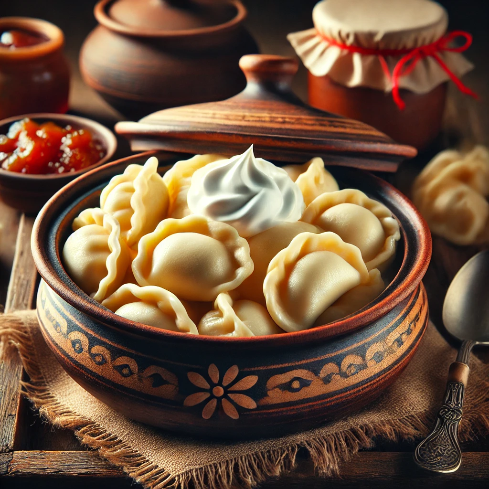

Варенички як у бабусі
Інгредієнти:
Для тіста:
- 2 склянки бооршна.
- 1 яйко.
- 1/2 склянки теплої води.
- 1 дрібка солі.
Для начинки:
- 250г домашнього сиру.
- 1 яйце.
- 2 ст.л. цукру(або за смаком дрібка солі).
Приготування:
Замішуємо тісто:
- У мисці змішати борошно, сіль, яйце та воду.
- Вимісити м’яке, еластичне тісто, накрити рушником і дати відпочити 15-20 хвилин.
Готуємо начинку:
- Сир змішати з яйцем, цукром і ванільним цукром.
- Добре розтерти, щоб маса стала однорідною.
Формуємо вареники:
- Тісто розкачати у тонкий пласт (2-3 мм) і вирізати кружечки (склянкою або формою).
- На кожен кружечок покласти трохи начинки, скласти навпіл і ретельно зліпити краї.
Варимо вареники:
- У киплячу підсолену воду кинути вареники.
- Варити 2-3 хвилини після спливання, потім вийняти шумівкою.
Подаємо:
- Вареники можна змастити вершковим маслом та подати зі сметаною або медом.